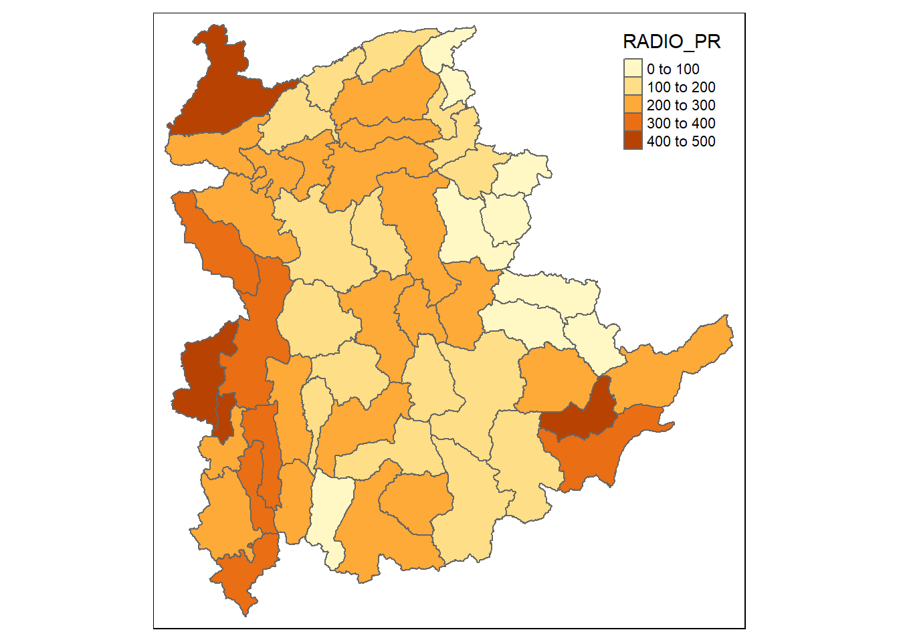

pacman::p_load(rgdal, spdep, tmap, sf, ClustGeo,
ggpubr, cluster, factoextra, NbClust,
heatmaply, corrplot, psych, tidyverse, GGally)Hands-on Exercise 6: Geographical Segmentation with Spatially Constrained Clustering Techniques
1.0 Introduction
1.1 Getting Started
In this hands-on exercise, you will gain hands-on experience on how to delineate homogeneous region by using geographically referenced multivariate data. There are two major analysis, namely:
Hierarchical cluster analysis; and
Spatially constrained cluster analysis.
1.2 The Analytical Question
In geobusiness and spatial policy, it is a common practice to delineate the market or planning area into homogeneous regions by using multivariate data. In this hands-on exercise, we are interested to delineate Shan State, Myanmar into homogeneous regions by using multiple Information and Communication technology (ICT) measures, namely: Radio, Television, Land line phone, Mobile phone, Computer, and Internet at home.
1.3 Installing and loading R packages
2.0 Data Acquisition
We will be using 2 datasets in this exercise:
Myanmar Township Boundary Data
Shan-ICT.csv
3.0 Geospatial Data Handling
We will be using the st_read() from sf package to import the data into RStudio.
3.1 Importing Geospatial Data
The Myanmar Township Boundary GIS data is in ESRI shapefile format. We will import this data into the R environment using the st_read() function of sf.
shan_sf <- st_read(dsn = "data/geospatial",
layer = "myanmar_township_boundaries") %>%
filter(ST %in% c("Shan (East)", "Shan (North)", "Shan (South)")) %>%
select(c(2:7))Reading layer `myanmar_township_boundaries' from data source
`C:\kt526\IS415-GAA\Hands-on_Ex\Hands-on_Ex06\data\geospatial'
using driver `ESRI Shapefile'
Simple feature collection with 330 features and 14 fields
Geometry type: MULTIPOLYGON
Dimension: XY
Bounding box: xmin: 92.17275 ymin: 9.671252 xmax: 101.1699 ymax: 28.54554
Geodetic CRS: WGS 843.2 Importing Aspatial Data
The Shan-ICT file is in .csv format. We will be import it using read_csv function of readr package.
ict <- read_csv("data/aspatial/Shan-ICT.csv")3.3 Data Preparation
3.3.1 Derive penetration rate of each ICT variable
The unit of measurement of the values are number of household. Using these values directly will be bias by the underlying total number of households. In general, the townships with relatively higher total number of households will also have higher number of households owning radio, TV, etc.
ict_derived <- ict %>%
mutate(`RADIO_PR` = `Radio`/`Total households`*1000) %>%
mutate(`TV_PR` = `Television`/`Total households`*1000) %>%
mutate(`LLPHONE_PR` = `Land line phone`/`Total households`*1000) %>%
mutate(`MPHONE_PR` = `Mobile phone`/`Total households`*1000) %>%
mutate(`COMPUTER_PR` = `Computer`/`Total households`*1000) %>%
mutate(`INTERNET_PR` = `Internet at home`/`Total households`*1000) %>%
rename(`DT_PCODE` =`District Pcode`,`DT`=`District Name`,
`TS_PCODE`=`Township Pcode`, `TS`=`Township Name`,
`TT_HOUSEHOLDS`=`Total households`,
`RADIO`=`Radio`, `TV`=`Television`,
`LLPHONE`=`Land line phone`, `MPHONE`=`Mobile phone`,
`COMPUTER`=`Computer`, `INTERNET`=`Internet at home`) We can review the summary statistics of the newly derived penetration rates using the summary() function.
summary(ict_derived) DT_PCODE DT TS_PCODE TS
Length:55 Length:55 Length:55 Length:55
Class :character Class :character Class :character Class :character
Mode :character Mode :character Mode :character Mode :character
TT_HOUSEHOLDS RADIO TV LLPHONE
Min. : 3318 Min. : 115 Min. : 728 Min. : 20.0
1st Qu.: 8711 1st Qu.: 1260 1st Qu.: 3744 1st Qu.: 266.5
Median :13685 Median : 2497 Median : 6117 Median : 695.0
Mean :18369 Mean : 4487 Mean :10183 Mean : 929.9
3rd Qu.:23471 3rd Qu.: 6192 3rd Qu.:13906 3rd Qu.:1082.5
Max. :82604 Max. :30176 Max. :62388 Max. :6736.0
MPHONE COMPUTER INTERNET RADIO_PR
Min. : 150 Min. : 20.0 Min. : 8.0 Min. : 21.05
1st Qu.: 2037 1st Qu.: 121.0 1st Qu.: 88.0 1st Qu.:138.95
Median : 3559 Median : 244.0 Median : 316.0 Median :210.95
Mean : 6470 Mean : 575.5 Mean : 760.2 Mean :215.68
3rd Qu.: 7177 3rd Qu.: 507.0 3rd Qu.: 630.5 3rd Qu.:268.07
Max. :48461 Max. :6705.0 Max. :9746.0 Max. :484.52
TV_PR LLPHONE_PR MPHONE_PR COMPUTER_PR
Min. :116.0 Min. : 2.78 Min. : 36.42 Min. : 3.278
1st Qu.:450.2 1st Qu.: 22.84 1st Qu.:190.14 1st Qu.:11.832
Median :517.2 Median : 37.59 Median :305.27 Median :18.970
Mean :509.5 Mean : 51.09 Mean :314.05 Mean :24.393
3rd Qu.:606.4 3rd Qu.: 69.72 3rd Qu.:428.43 3rd Qu.:29.897
Max. :842.5 Max. :181.49 Max. :735.43 Max. :92.402
INTERNET_PR
Min. : 1.041
1st Qu.: 8.617
Median : 22.829
Mean : 30.644
3rd Qu.: 41.281
Max. :117.985 4.0 Exploratory Data Analysis (EDA)
4.1 Statistical graphics
We can plot the distribution of the variables (i.e. Number of households with radio) by using appropriate Exploratory Data Analysis (EDA).
4.1.1 Histograms
Histogram is useful to identify the overall distribution of the data values (i.e. left skew, right skew or normal distribution)
ggplot(data=ict_derived,
aes(x=`RADIO`)) +
geom_histogram(bins=20,
color="black",
fill="light blue")
4.1.2 Statistical graphics - Multiple Histograms
radio <- ggplot(data=ict_derived,
aes(x= `RADIO_PR`)) +
geom_histogram(bins=20,
color="black",
fill="light blue")
tv <- ggplot(data=ict_derived,
aes(x= `TV_PR`)) +
geom_histogram(bins=20,
color="black",
fill="light blue")
llphone <- ggplot(data=ict_derived,
aes(x= `LLPHONE_PR`)) +
geom_histogram(bins=20,
color="black",
fill="light blue")
mphone <- ggplot(data=ict_derived,
aes(x= `MPHONE_PR`)) +
geom_histogram(bins=20,
color="black",
fill="light blue")
computer <- ggplot(data=ict_derived,
aes(x= `COMPUTER_PR`)) +
geom_histogram(bins=20,
color="black",
fill="light blue")
internet <- ggplot(data=ict_derived,
aes(x= `INTERNET_PR`)) +
geom_histogram(bins=20,
color="black",
fill="light blue")
ggarrange(radio, tv, llphone, mphone, computer, internet,
ncol = 3,
nrow = 2)
Note
The ggarrange() function of ggpubr package is used to group these histograms together.
4.1.3 Statistical graphics - Boxplot
Boxplot is useful to detect if there are outliers.
ggplot(data=ict_derived,
aes(x=`RADIO`)) +
geom_boxplot(color="black",
fill="light blue")
4.2 Choropleth Map
4.2.1 Preparing the data for choropleth map
Before we can prepare the choropleth map, we need to combine both the geospatial data object (i.e. shan_sf) and aspatial data.frame object (i.e. ict_derived) into one using the left_join() function of dplyr package.
shan_sf <- left_join(shan_sf,
ict_derived, by=c("TS_PCODE"="TS_PCODE"))
# write_rds(shan_sf, "data/rds/shan_sf.rds")
shan_sf <- read_rds("data/rds/shan_sf.rds")
Note
The unique identifier used to join both data objects is TS_PCODE.
4.2.2 Plotting choropleth map
qtm(shan_sf, "RADIO_PR")
Note
The distribution shown in the choropleth map above are bias to the underlying total number of households at the townships
When we compare the two choropleth maps below, we can tell the biasness.
TT_HOUSEHOLDS.map <- tm_shape(shan_sf) +
tm_fill(col = "TT_HOUSEHOLDS",
n = 5,
style = "jenks",
title = "Total households") +
tm_borders(alpha = 0.5)
RADIO.map <- tm_shape(shan_sf) +
tm_fill(col = "RADIO",
n = 5,
style = "jenks",
title = "Number Radio ") +
tm_borders(alpha = 0.5)
tmap_arrange(TT_HOUSEHOLDS.map, RADIO.map,
asp=NA, ncol=2)
Note
Notice that the choropleth maps above clearly show that townships with relatively larger number ot households are also showing relatively higher number of radio ownership.
Now, let us plot the choropleth maps showing the distribution of total number of households and Radio penetration rate.
tm_shape(shan_sf) +
tm_polygons(c("TT_HOUSEHOLDS", "RADIO_PR"),
style="jenks") +
tm_facets(sync = TRUE, ncol = 2) +
tm_legend(legend.position = c("right", "bottom"))+
tm_layout(outer.margins=0, asp=0)
5.0 Correlation Analysis
Before we perform cluster analysis, it is important for us to ensure that the cluster variables are not highly correlated.
cluster_vars.cor = cor(ict_derived[,12:17])
corrplot.mixed(cluster_vars.cor,
lower = "ellipse",
upper = "number",
tl.pos = "lt",
diag = "l",
tl.col = "black")The correlation plot above shows that COMPUTER_PR and INTERNET_PR are highly correlated. This suggest that only one of them should be used in the cluster analysis instead of both.
6.0 Hierarchy Cluster Analysis
In this section, we will be performing hierarchical cluster analysis. The analysis consists of four major steps:
- Extracting clustering variables
- Data Standardisation
- Computing proximity matric
- Computing hierarchical clustering
6.1 Extracting clustering variables
Firstly, let us extract the variables that will be used for clustering analysis from the shan_sf simple feature object into data.frame.
cluster_vars <- shan_sf %>%
st_set_geometry(NULL) %>%
select("TS.x", "RADIO_PR", "TV_PR", "LLPHONE_PR", "MPHONE_PR", "COMPUTER_PR")
head(cluster_vars,10) TS.x RADIO_PR TV_PR LLPHONE_PR MPHONE_PR COMPUTER_PR
1 Mongmit 286.1852 554.1313 35.30618 260.6944 12.15939
2 Pindaya 417.4647 505.1300 19.83584 162.3917 12.88190
3 Ywangan 484.5215 260.5734 11.93591 120.2856 4.41465
4 Pinlaung 231.6499 541.7189 28.54454 249.4903 13.76255
5 Mabein 449.4903 708.6423 72.75255 392.6089 16.45042
6 Kalaw 280.7624 611.6204 42.06478 408.7951 29.63160
7 Pekon 318.6118 535.8494 39.83270 214.8476 18.97032
8 Lawksawk 387.1017 630.0035 31.51366 320.5686 21.76677
9 Nawnghkio 349.3359 547.9456 38.44960 323.0201 15.76465
10 Kyaukme 210.9548 601.1773 39.58267 372.4930 30.94709
Note
Notice that the final clustering variables list does not include variable INTERNET_PR because it is highly correlated with variable COMPUTER_PR.
row.names(cluster_vars) <- cluster_vars$"TS.x"
head(cluster_vars,10) TS.x RADIO_PR TV_PR LLPHONE_PR MPHONE_PR COMPUTER_PR
Mongmit Mongmit 286.1852 554.1313 35.30618 260.6944 12.15939
Pindaya Pindaya 417.4647 505.1300 19.83584 162.3917 12.88190
Ywangan Ywangan 484.5215 260.5734 11.93591 120.2856 4.41465
Pinlaung Pinlaung 231.6499 541.7189 28.54454 249.4903 13.76255
Mabein Mabein 449.4903 708.6423 72.75255 392.6089 16.45042
Kalaw Kalaw 280.7624 611.6204 42.06478 408.7951 29.63160
Pekon Pekon 318.6118 535.8494 39.83270 214.8476 18.97032
Lawksawk Lawksawk 387.1017 630.0035 31.51366 320.5686 21.76677
Nawnghkio Nawnghkio 349.3359 547.9456 38.44960 323.0201 15.76465
Kyaukme Kyaukme 210.9548 601.1773 39.58267 372.4930 30.94709shan_ict <- select(cluster_vars, c(2:6))
head(shan_ict, 10) RADIO_PR TV_PR LLPHONE_PR MPHONE_PR COMPUTER_PR
Mongmit 286.1852 554.1313 35.30618 260.6944 12.15939
Pindaya 417.4647 505.1300 19.83584 162.3917 12.88190
Ywangan 484.5215 260.5734 11.93591 120.2856 4.41465
Pinlaung 231.6499 541.7189 28.54454 249.4903 13.76255
Mabein 449.4903 708.6423 72.75255 392.6089 16.45042
Kalaw 280.7624 611.6204 42.06478 408.7951 29.63160
Pekon 318.6118 535.8494 39.83270 214.8476 18.97032
Lawksawk 387.1017 630.0035 31.51366 320.5686 21.76677
Nawnghkio 349.3359 547.9456 38.44960 323.0201 15.76465
Kyaukme 210.9548 601.1773 39.58267 372.4930 30.947096.2 Data Standardisation
In general, multiple variables will be used in cluster analysis. It is not unusual their values range are different. In order to avoid the cluster analysis result is baised to clustering variables with large values, it is useful to standardise the input variables before performing cluster analysis.
6.2.1 Min-Max standardisation
The normalize() of heatmaply package is used to stadardisation the clustering variables by using Min-Max method. The summary() is then used to display the summary statistics of the standardised clustering variables.
shan_ict.std <- normalize(shan_ict)
summary(shan_ict.std) RADIO_PR TV_PR LLPHONE_PR MPHONE_PR
Min. :0.0000 Min. :0.0000 Min. :0.0000 Min. :0.0000
1st Qu.:0.2544 1st Qu.:0.4600 1st Qu.:0.1123 1st Qu.:0.2199
Median :0.4097 Median :0.5523 Median :0.1948 Median :0.3846
Mean :0.4199 Mean :0.5416 Mean :0.2703 Mean :0.3972
3rd Qu.:0.5330 3rd Qu.:0.6750 3rd Qu.:0.3746 3rd Qu.:0.5608
Max. :1.0000 Max. :1.0000 Max. :1.0000 Max. :1.0000
COMPUTER_PR
Min. :0.00000
1st Qu.:0.09598
Median :0.17607
Mean :0.23692
3rd Qu.:0.29868
Max. :1.00000
Note
Notice that the values range of the Min-max standardised clustering variables are 0-1 now.
6.2.2 Z-score standardisation
Z-score standardisation can be performed easily by using scale() of Base R
shan_ict.z <- scale(shan_ict)
describe(shan_ict.z) vars n mean sd median trimmed mad min max range skew kurtosis
RADIO_PR 1 55 0 1 -0.04 -0.06 0.94 -1.85 2.55 4.40 0.48 -0.27
TV_PR 2 55 0 1 0.05 0.04 0.78 -2.47 2.09 4.56 -0.38 -0.23
LLPHONE_PR 3 55 0 1 -0.33 -0.15 0.68 -1.19 3.20 4.39 1.37 1.49
MPHONE_PR 4 55 0 1 -0.05 -0.06 1.01 -1.58 2.40 3.98 0.48 -0.34
COMPUTER_PR 5 55 0 1 -0.26 -0.18 0.64 -1.03 3.31 4.34 1.80 2.96
se
RADIO_PR 0.13
TV_PR 0.13
LLPHONE_PR 0.13
MPHONE_PR 0.13
COMPUTER_PR 0.13
Note
Notice the mean and standard deviation of the Z-score standardised clustering variables are 0 and 1 respectively.
6.2.3 Visualising the standardised clustering variables
Beside reviewing the summary statistics of the standardised clustering variables, it is also a good practice to visualise their distribution graphical.
r <- ggplot(data=ict_derived,
aes(x= `RADIO_PR`)) +
geom_histogram(bins=20,
color="black",
fill="light blue") +
ggtitle("Raw values without standardisation")
shan_ict_s_df <- as.data.frame(shan_ict.std)
s <- ggplot(data=shan_ict_s_df,
aes(x=`RADIO_PR`)) +
geom_histogram(bins=20,
color="black",
fill="light blue") +
ggtitle("Min-Max Standardisation")
shan_ict_z_df <- as.data.frame(shan_ict.z)
z <- ggplot(data=shan_ict_z_df,
aes(x=`RADIO_PR`)) +
geom_histogram(bins=20,
color="black",
fill="light blue") +
ggtitle("Z-score Standardisation")
ggarrange(r, s, z,
ncol = 3,
nrow = 1)